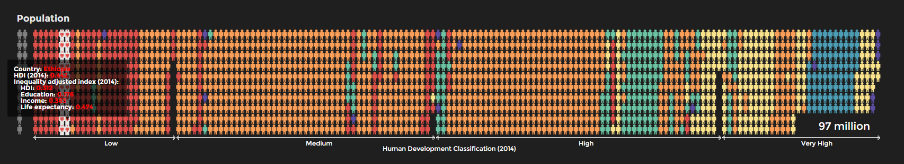
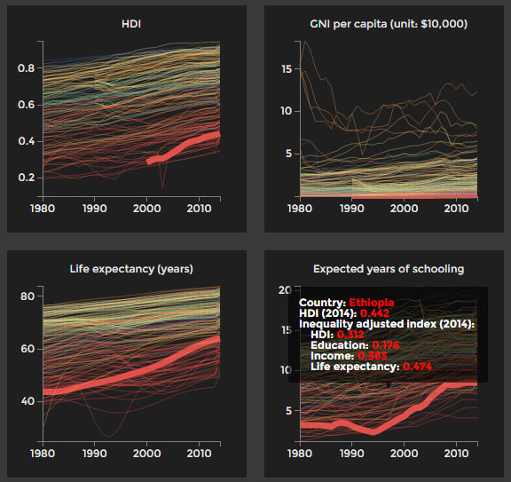

Visualization description
This visualization has three interconnected parts.
Map
What is the level of human development and inequality of a country in 2014?

Human Development Index (HDI) level of each country is colour-coded. Countries in the same region share the same colour family but the colour grows darker as HDI decreases. The tooltip shows the value of HDI and inequality-adjusted HDI, life expectancy index, education index and icnome index.
Population chart
How is the world population distributed in terms of human development?

Countries are assigned into four groups: low, medium, high and very high human development. But an important question is how the world population is distributed into these four groups. In the population chart, HDI increases from left to right. Every person in the chart represents 5 million people. Countries with a population less than 5 million are represented by one icon, while countries for which there is no HDI data are represented in grey on the left side of the box.
Line charts
What progress have countries made over the last three decades?

The charts show what progress countries have made in terms of HDI and its components (life expectancy, expected years of schooling and GNI per capita) from 1980 to 2014. The colours of countries are the same as they appeared on the map. The data values covering from 1980 to 2013 were from HDI data release in 2014 and hence there are slight discrepancies from the HDI trends data in Human Development Report 2015 (see HDI FAQ for more details about data revisons made in HDR 2015). However, as trend data in 2015 report is only available for few selected years (1990, 2000, 2010, 2011, 2012, 2013 and 2014) and data on three components (GNI, life expectancy and years of schooling) are not available, HDI data released in 2014 were used for the line charts up to 2013 to show the historical trend. To see the difference between historic data between HDR 2014 and HDR 2015, visit here.